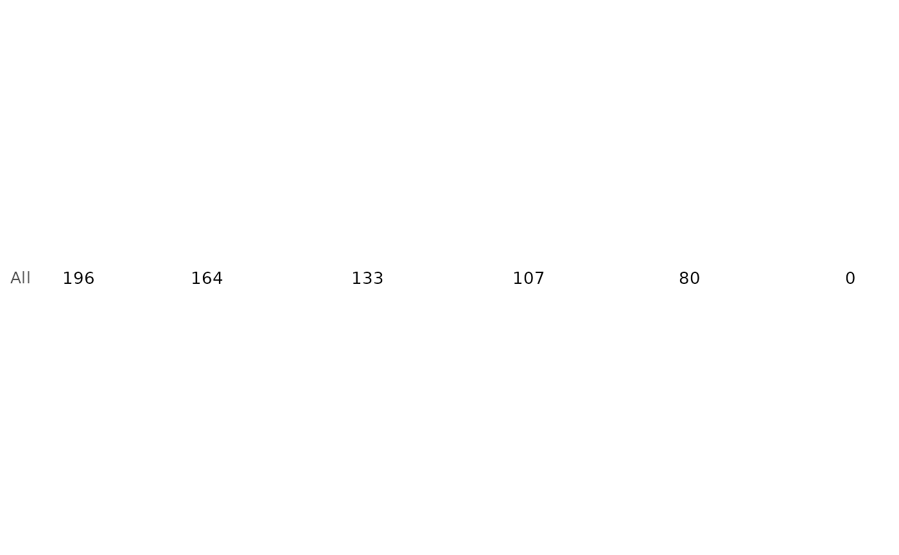

Renders a numbers-at-risk table as a bare ggplot2 panel, ready to
stack under a survival curve with hv_atrisk_compose.
Usage
hv_atrisk(
x,
time = NULL,
status = NULL,
group = NULL,
report_times = NULL,
size = NULL,
strata_labels = NULL,
...
)Arguments
- x
One of: an
hv_dataobject that carries$tables$risk(e.g. fromhv_survival); a precomputed risk data frame withstrata,report_time(ortime), andn.risk(orn) columns; or a subject-level data frame supplied together with thetime(and optionalstatus/group) column names, from which counts are computed.- time, status, group
Column names in
xwhenxis a subject-level data frame.timetriggers the raw-data path;statusis reserved and currently unused;groupsplits the table into strata. Passgroupas a factor to control the stratum row order (its levels set the order); a character column orders rows alphabetically. DefaultNULL.- report_times
Numeric time points for the columns.
NULL(default) uses the table's own points, or – on the raw-data path – an even spread derived from the observed time range. On the object and precomputed-table paths a non-NULLvalue selects which of the table's existing times to show; the counts are not recomputed, and any requested time not in the table is ignored with a warning. To use arbitrary times for a Kaplan-Meier object, rebuild it withhv_survival(..., report_times = )or pass the subject-level data.- size
Text size for the counts. Default
NULL(3.5).- strata_labels
Optional named character vector remapping stratum row labels. Default
NULL.- ...
Ignored; present for S3 consistency.
Value
A bare ggplot object: one text label per
stratum and report time, strata as y rows (first stratum on top), time on
a continuous x with axis text blanked (the curve carries the axis).
Examples
km <- hv_survival(sample_survival_data(n = 200, seed = 1))
hv_atrisk(km)
